最初にやることは、おうちの Wi-Fi を教えてあげることだけです。 全 5 ステップ、10 分ほどで終わります。
ちびスタックちゃんは 2.4GHz の Wi-Fi にしかつながりません。
5GHz（名前の最後が -a -A 5G のもの）を入れると、
何度やっても失敗します。→ STEP 5
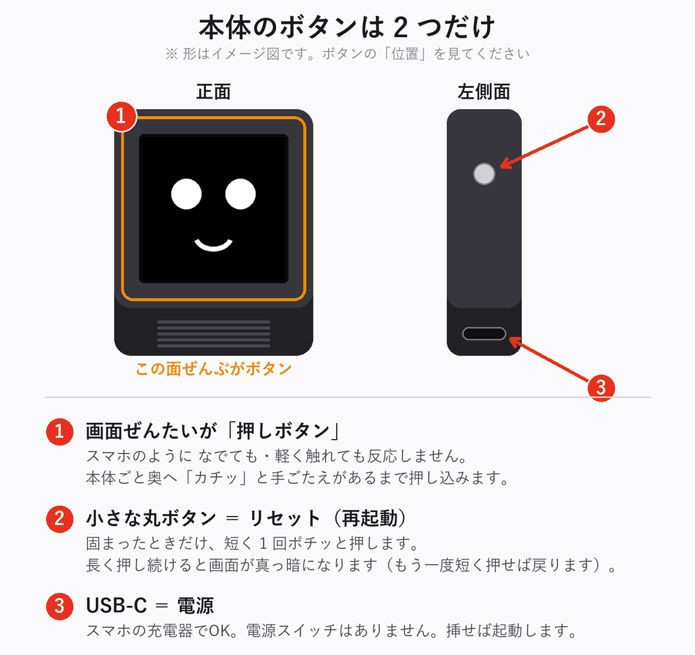
画面は、スマホのように なでても・軽く触れても反応しません。 本体ごと奥へ「カチッ」と手ごたえがあるまで押し込みます。 反応しないときは、たいてい押し込みが浅いだけです。
USB-C ケーブルを充電器につなぐだけです。電源スイッチはありません。 10 秒ほどで、この画面になります。
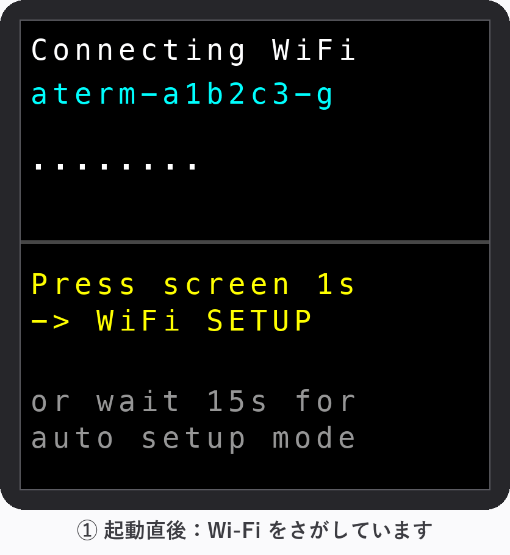
青い文字は前の持ち主の家の Wi-Fi 名です。あなたの家には無いので、 当然見つかりません。そのまま STEP 2 へ進んでください。
すでにこの家の Wi-Fi につながっています。設定は不要です
→ 使い方へ。
Wi-Fi を変えたい場合は、画面を押したまま 3 秒キープすると
STEP 2 の画面に入れます。
15 秒ほどそのまま待ちます。 「ピッ、ポーン」と音が鳴って、オレンジ色の帯の画面に自動で切り替わります。
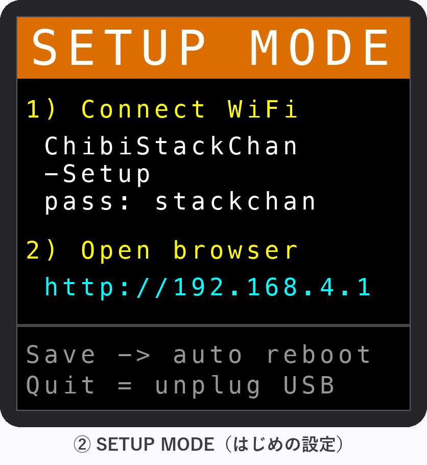
| 画面の表示 | 意味 |
|---|---|
| 1) Connect WiFi ChibiStackChan-Setup pass: stackchan |
STEP 3 でつなぐ Wi-Fi の名前とパスワード |
| 2) Open browser http://192.168.4.1 |
STEP 4 で開くアドレス |
点が出ている間に画面をカチッと押したまま 1 秒キープすると、 すぐ切り替わります。（すでに顔が出ているときは押したまま 3 秒）
| 15秒たっても切り替わらない | もう10秒待つ。変わらなければUSBを抜き差しして最初から |
| 画面が真っ暗 | 左側面のボタンを短く1回ポチッと押す、またはUSBを抜き差し |
| 顔が出てしまった | 画面を押したまま3秒キープ |
ここがいちばん間違えやすいところです。ゆっくり進めてください。
いまから、スマホの接続先を一時的にちびスタックちゃん本体に切り替えます。
設定が終わったら、おうちの Wi-Fi に戻します。
一覧に ChibiStackChan-Setup が出てくるので、これをタップします。
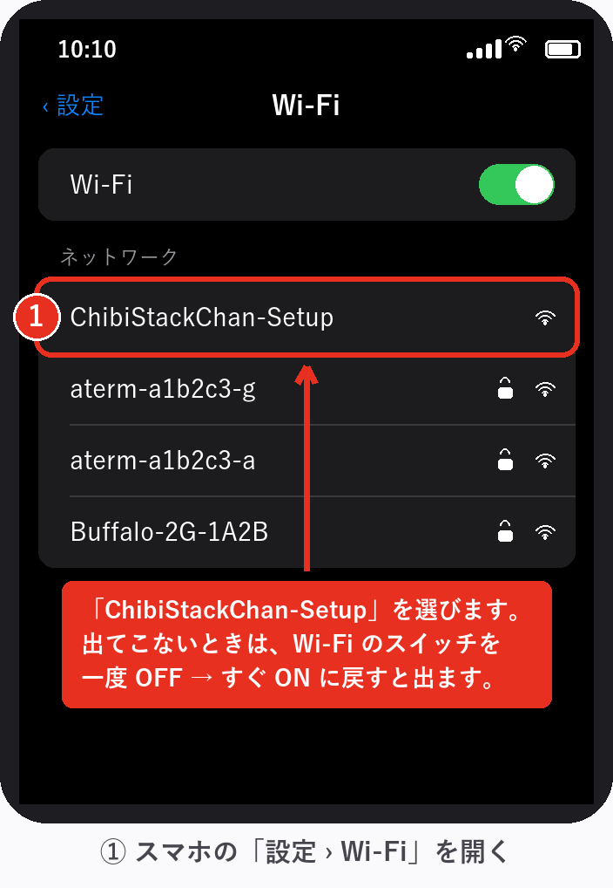
Wi-Fi のスイッチを一度 OFF にして、すぐ ON に戻してください。 一覧が読み込み直されて出てきます。よくあることなので、あわてなくて大丈夫です。
すべて半角の小文字で入力し、右上の「接続」を押します。
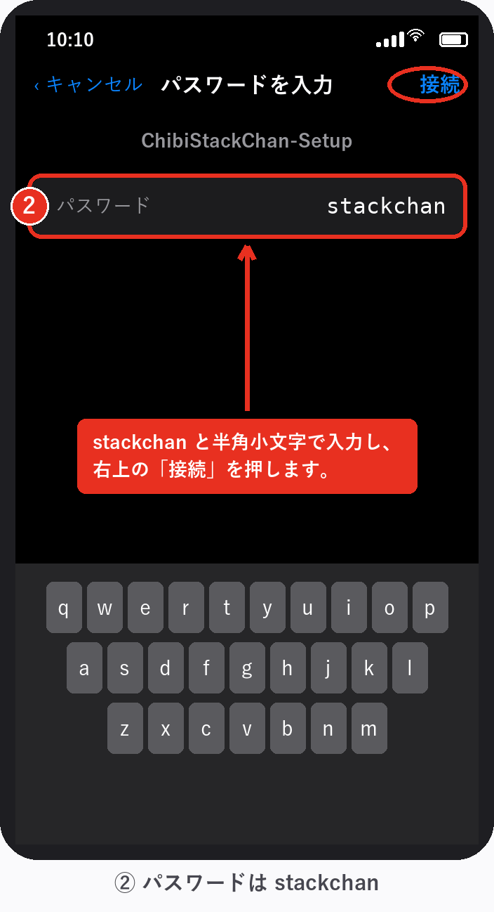
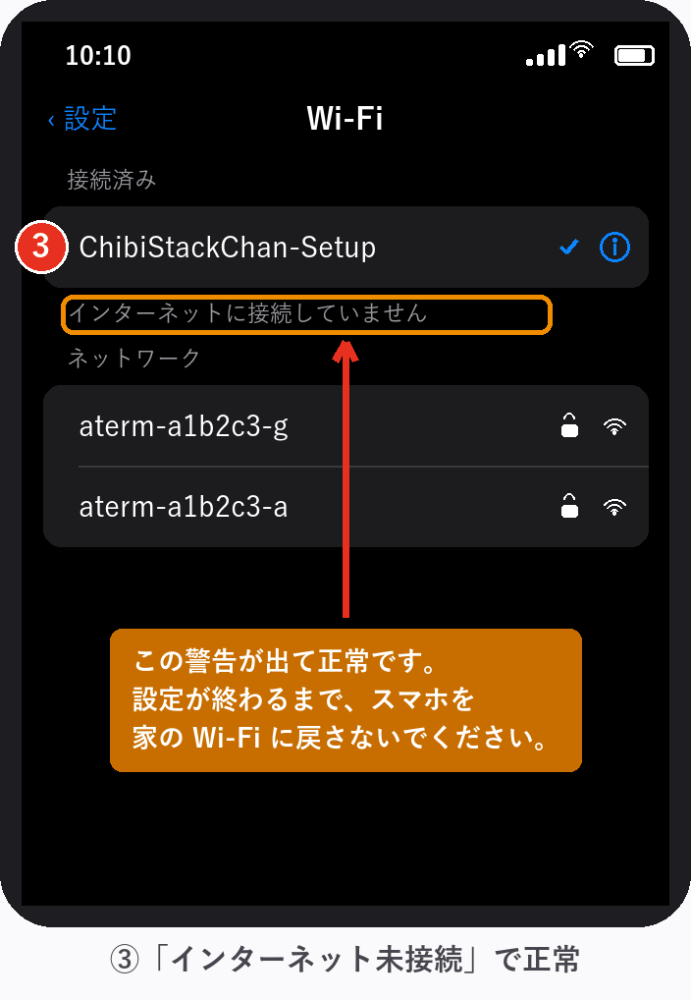
「インターネットに接続していません」「安全ではありません」などの警告が出ますが、
それが正しい状態です。ちびスタックちゃん本体は、インターネットに
つながっていない小さな Wi-Fi だからです。
設定が終わるまで、スマホを元の Wi-Fi に戻さないでください。
ChibiStackChan-Setup が一覧に出ない |
Wi-Fi のスイッチを一度OFFにして、すぐONに戻すと出てきます。それでも出なければ、本体の画面がオレンジの SETUP MODE か確認（STEP 2） |
| パスワードが違うと言われる | stackchan を半角小文字で。日本語入力がオンだと全角になります |
| 接続してもすぐ元のWi-Fiに戻る | スマホの「自動接続」が働いています。もう一度手動で選び直してください |
スマホのブラウザ（Safari など）を開き、アドレス欄に半角で入力します。
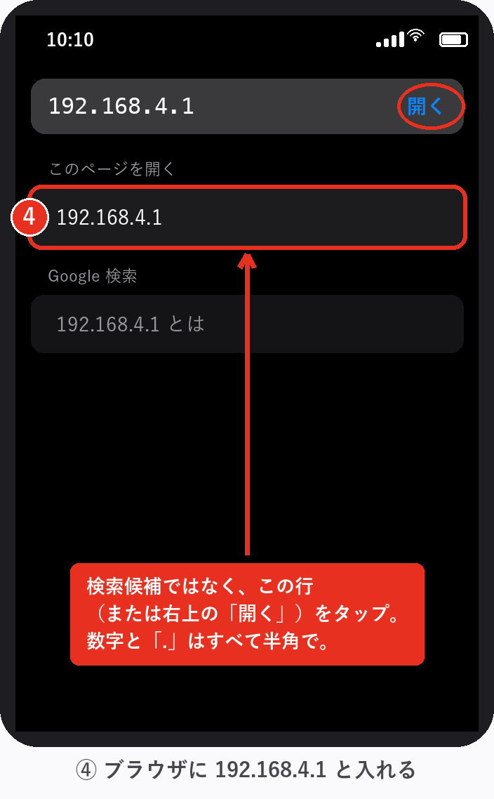
入力すると、下に「検索候補」と「このページを開く」の
2 種類が出ます。検索候補ではなく、192.168.4.1 そのもの
（または右上の「開く」）をタップしてください。
検索を選ぶと Google の検索結果が出てしまい、設定画面にたどり着けません。
.（ピリオド）」もすべて半角ですhttp:// は付けても付けなくても構いません| 「サーバが見つかりません」 | STEP 3 に戻り、スマホが ChibiStackChan-Setup につながっているか確認 |
| Googleの検索結果が出た | 検索候補をタップしています。もう一度入力して「開く」の方を選んでください |
| いつまでも読み込み中 | スマホのモバイル通信（4G/5G）を一時的にオフにすると通りやすくなります |
オレンジ色の帯の「SETUP MODE / はじめの設定」というページが開きます。 入力するのは 2 つだけです。
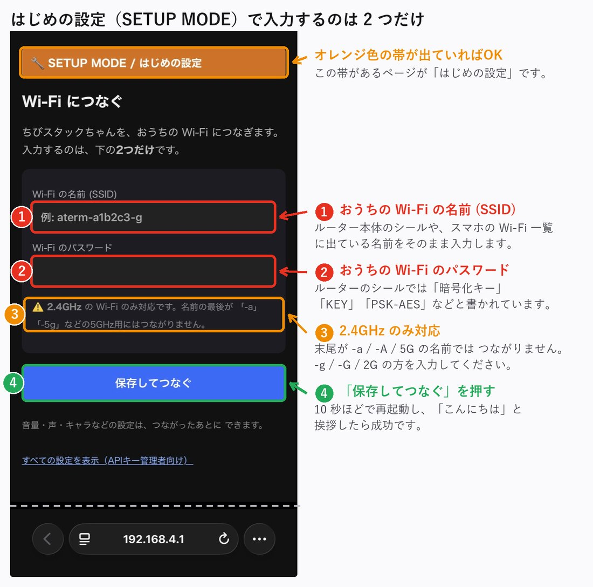
Wi-Fi の一覧に、末尾だけ違う似た名前が 2 つ並んでいることがあります。
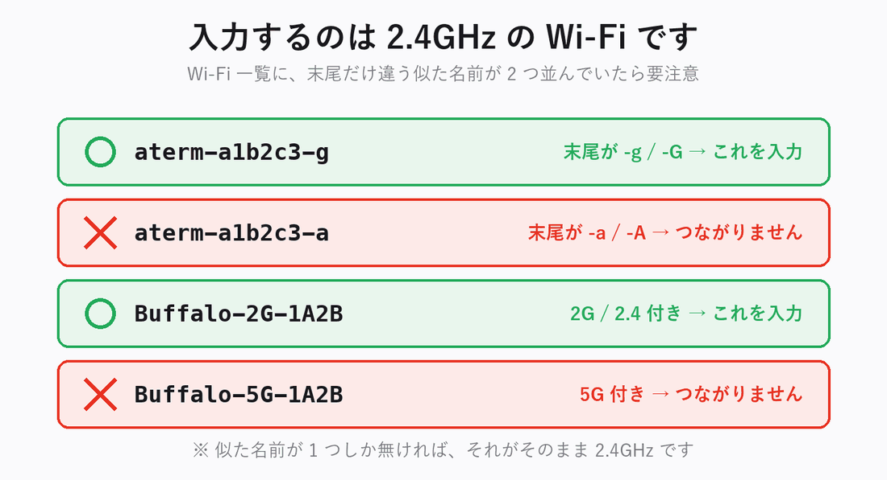
入力したら、青い「保存してつなぐ」を押します。
「保存してつなぐ」を押すと、10 秒ほどで自動的に再起動します。
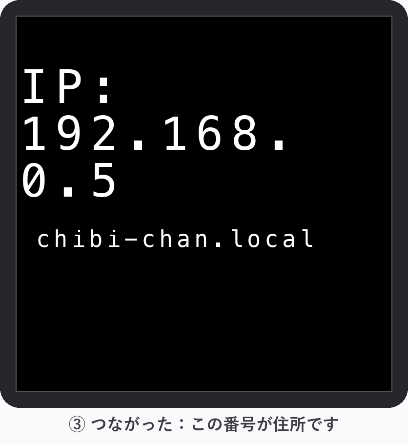
192.168.x.x）が数秒表示されます。つながった証拠です。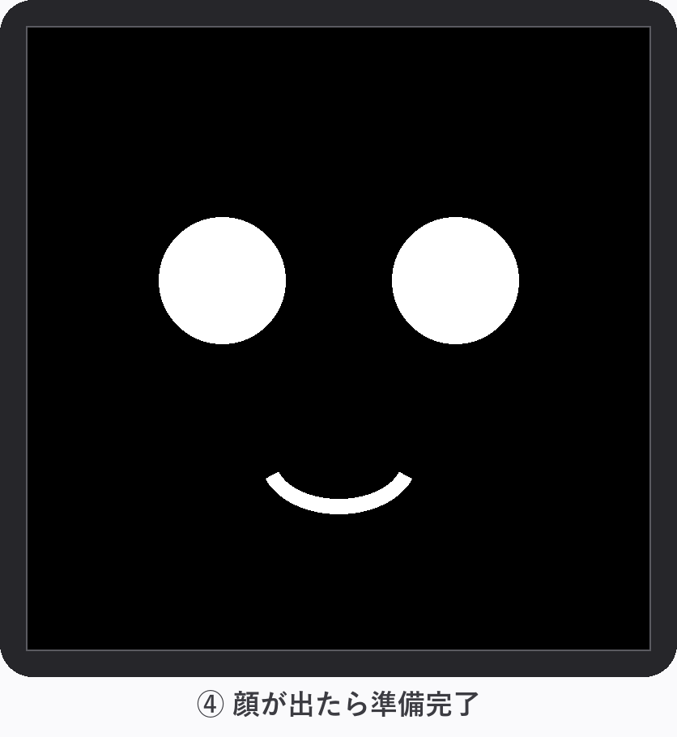
スマホの Wi-Fi を、おうちの Wi-Fi に戻してください。
表示された IPアドレスは覚えなくて大丈夫です。あとで「アイピー教えて」と
話しかければ読み上げてくれます。
ふつうに話しかけるだけです。30〜60cm くらいの距離で、 ふつうの声の大きさでどうぞ。
| モード | 話しかけ方 |
|---|---|
| なんでも返事 | 何を言っても返事します |
| 呼びかけワード | 「スタックちゃん、今日の天気は？」のように名前を呼んでから話す |
画面（顔）をカチッと 1 回押すと、呼びかけなしで聞いてくれます （ピッと鳴ったら話す）。
| 黒 | 待機中（話しかけてOK） |
| 緑 | 聞いています（録音中） |
| 紺 | 考え中（ちょっと待ってね） |
セットアップが終わったあとは、おうちの Wi-Fi 経由で設定画面を開けます。 スマホをちびスタックちゃんと同じ Wi-Fi につないで、 ブラウザに次のどちらかを入力します。
または、起動時に表示された IPアドレス
.local はスマホの機種によって開けないことがあります。
その場合は IPアドレスを使ってください（こちらは確実です）。
忘れたら「アイピー教えて」と話しかけると読み上げてくれます。
IPアドレスは、停電やルーター再起動のあとに変わることがあります。
読み上げを聞き取れないときは、側面のボタンを短く1回押して再起動すると、 つながった直後に画面へ大きな文字で数秒表示されます。こちらが確実です。
スマホのテザリングで使っている場合は番号の範囲が決まっていて、
iPhone なら http://172.20.10.2/ がほぼ当たりです
（外れても .3 .4 .5 と数個試せば見つかります）。
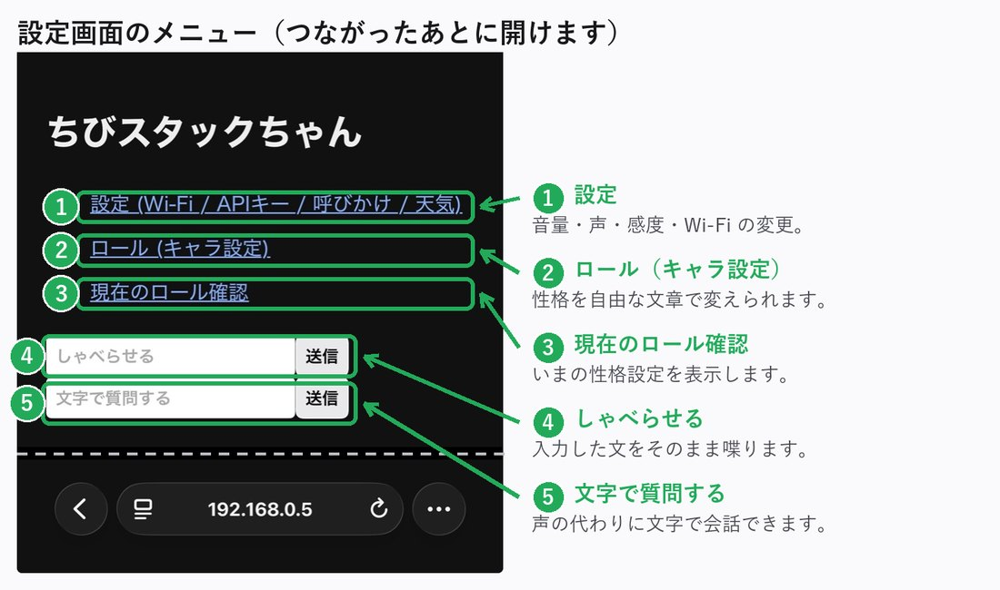
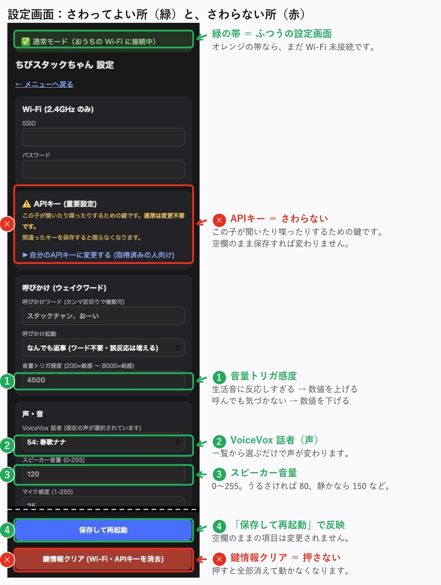
| 項目 | 説明 |
|---|---|
| スピーカー音量 | 0〜255。うるさければ 80、静かなら 150 など |
| VoiceVox 話者 | 声のキャラクターを一覧から選ぶだけ |
| 音量トリガ感度 | 生活音に反応しすぎるなら上げる、呼んでも気づかないなら下げる |
変えたら一番下の青い「保存して再起動」を押します。 空欄のままの項目は変更されません。
メニューの「ロール（キャラ設定）」で、性格を自由な文章で決められます。 枠に文章を入力して「送信」するだけです（空欄で送信すると元に戻ります）。
あなたはコッテコテの大阪人です。ボケとツッコミを忘れずに使って下さい。
あなたは物知りでやさしいおばあちゃんです。ゆっくり丁寧に話します。
設定画面の「APIキー（重要設定）」と赤いボタンの 「鍵情報クリア」は、この子が聞いたり喋ったりするための心臓部です。 APIキーは、この子を渡した人（APIキー管理者）のものが設定済みで、 料金もその人のアカウントに請求されます。
STEP 1 からもう一度やり直してください。 すでに顔が出ている場合は、画面を押したまま 3 秒キープすると SETUP MODE に入れます。
| 症状 | 対処 |
|---|---|
| 反応しない・画面が暗い | USBを抜き差しするか、左側面のボタンを短くポチッと押して再起動（データは消えません） |
| 画面を押しても反応がない | 押し込みが浅いかも。「カチッ」と手応えがあるまで押してください |
| SETUP MODE から進まない | Wi-Fi の登録がまだ、または名前/パスワードが違います → STEP 3〜5 |
| 起動しても挨拶しない・無言 | Wi-Fi が切れている可能性。STEP 1 からやり直すか、再起動 |
| 緑にならない（聞いてくれない） | もう少し近くで・はっきり話す。「音量トリガ感度」の数値を下げる |
| 「うまく聞き取れなかったよ」と言う | 通信の一時的な不調です。少し待ってもう一度 |
| 「ただいま混み合っています」と言う | AIサービス側の混雑。数分待つ |
| 何を言っても無言 | Wi-Fi が切れたか、APIの問題。再起動して直らなければ APIキー管理者へ連絡 |
| 設定画面が開けない | 同じ Wi-Fi にいるか確認。「アイピー教えて」でアドレスを確認 |
| テレビや生活音に反応しすぎる | 「音量トリガ感度」の数値を上げる。または呼びかけワードモードに |
| 画面が真っ暗になった | 側面のリセットを長く押しすぎた可能性。もう一度短くポチッと押すか、USBを抜き差し（壊れていません） |
再起動は USB の抜き差しでいつでも OK。設定やキャラは本体に保存されているので消えません。
この子は喋るたびにインターネットの AI サービスを少しずつ使います。 料金はこの子を渡した人（APIキー管理者）のアカウントに請求されます。 1 回の会話で 1 円未満、ふつうに使えば月に数百円程度です。
常識の範囲で好きなだけ話しかけて大丈夫ですが、ラジオ代わりに一日中 話し続けるような使い方は APIキー管理者と相談してください。
ちびスタックちゃん 取扱説明書 — 困ったときは、この子を渡した人（APIキー管理者）へ。